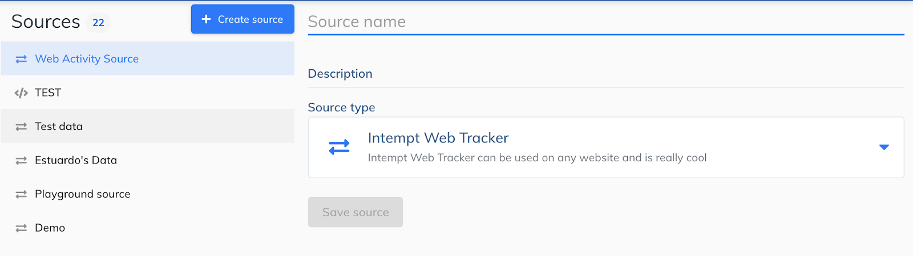
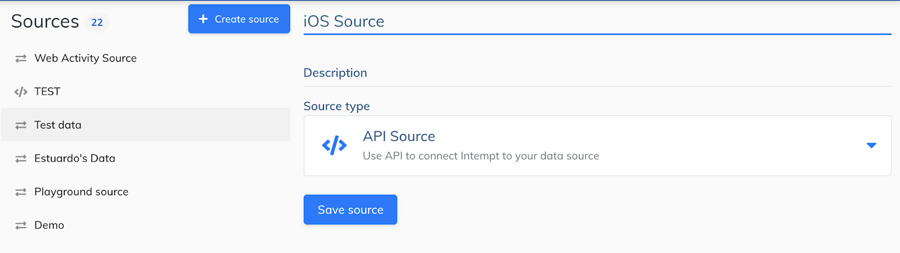

# Experiment with the Sample App
# 1. Web App
You will first need to register for a free account on Intempt Platform.
For the Web App, you’ll need to create your own authorization token and to add that to the sample app. This is the most straight-forward — sign-up and Create a New Organization. You will then Create a New Source of type Web.
You should then fork our Github repo and replace the Playground Source referenced within the Sample App to your own.

Follow the steps and screenshots here.
# 2. iOS App
You will first need to register for a free account on Intempt Platform.
For the iOS App, you’ll need to create your own authorization token and to add that to the sample app. This is the most straight-forward — sign-up and Create a New Organization. You will then Create a New Source of type iOS. You should then fork our Github repo and replace the Playground Source referenced within the Sample App to your own.

Follow the steps and screenshots here.
# INVITE COLLEAGUES TO WORK WITH
When you create your own token and add it to the sample app, you will be capturing data in real time. You’re now ready to create Events and Segments in the UI. To these effectively, it can be useful to work with others.
Invite them to join you in the Organization! You can invite others from within Intempt Platform, using the Invite functionality.
$INVITE_USER_SCREENSHOT